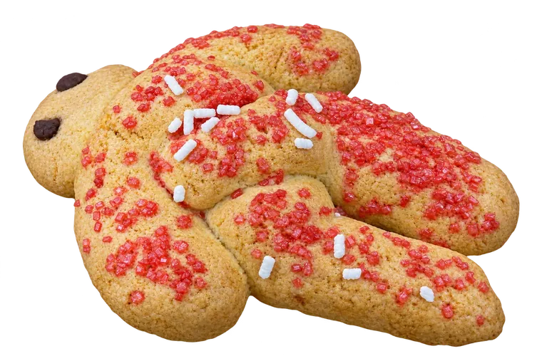

Il nostro laboratorio
Lievito madre, da oltre quarant'anni.
Lo custodiamo e lo nutriamo ogni giorno nel laboratorio di Dossobuono. È lui che fa crescere i nostri panettoni, con calma.
Ingredienti che si riconoscono.
Farine macinate a pietra, latte fresco di montagna, uova biologiche, frutta fresca e miele a km 0. Per un'etichetta pulita.
Solo nel mese prima di Natale.
Il maestro pasticciere Adalberto e lo staff impastano i lievitati solo in queste settimane, per lavorare materie prime fresche.
Scegli il tuo lievitato
I lievitati di Natale
Nove ricette per queste feste, due sono novità del 2026. Scegli il tuo e prenotalo: lo ritiri da noi in Via Vertua.
Classico veronese
Natalino
28,00 €kg 0,650
La coccola del Natale veronese: un grande classico, morbidissimo e dal gusto equilibrato.
La prenotazione online è sul nostro shop di Natale, pasticceriagioia.it.
I pesi sono indicativi: i lievitati sono fatti interamente a mano. Prima di prenotare guarda la scheda ingredienti e allergeni. Regali per clienti e collaboratori? Il Natale per le aziende.
Santa Lucia, 13 dicembre.
A Verona e Villafranca per Santa Lucia si preparano i puoti, i biscotti a forma di omino. Noi li facciamo a mano, con materie prime a km 0.

-
Puoto di Santa Lucia
Formato unico.
2,50 € al pezzo
-
Frollini di Santa Lucia
Confezione da 250 g, al burro oppure vegani, adatti anche a chi è intollerante al lattosio.
10,00 € la confezione
Una giornata al Gioia
Le vostre parole.
4,3 su Google, 528 recensioni
-
Brioche veramente deliziosa, servita leggermente calda
★★★★★ Lorenzo L., su Google
-
Ottima la qualità delle materie prime, ottimo il servizio e molto piacevole l’atmosfera. La colazione è artigianale e super sfogliata promossa a pieni voti.
★★★★★ V. G., su Google
-
Conosco la pasticceria, di alta qualità e personale gentile e disponibile, belle le confezioni e le decorazioni
★★★★★ Antonio M., su Google
Vieni a trovarci
Orari qui sotto
| Lunedì–venerdì | 6:30–19:30 |
|---|---|
| Sabato | 6:30–12:30 15:30–19:00 |
| Domenica | 7:00–12:30 |
Durante le feste gli orari possono cambiare: li annunciamo su Instagram.
37062 Dossobuono (VR) Apri in Google Maps
Al tavolo, da asporto e con consegna a domicilio.
- Telefono045 513560
- Cellulare e WhatsApp324 806 7232
- Emailgelateriagioia@gmail.com
- Instagram@gelateriagioia_dossobuono
- Ordini di Natalepasticceriagioia.it